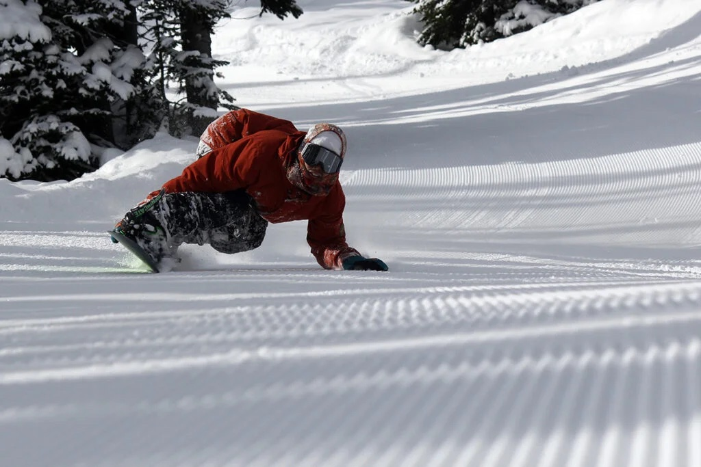

Carving
Carving is all about pure, fluid turns and using the board's edge effectively. When executed correctly, a carved turn leaves behind a single, clean line in the snow.
This technique demands specific snowboards with a deeper sidecut and often stiffer flex to ensure stability and precision. Riders dedicated to carving often opt for hard boots, which resemble ski boots, offering greater control. Perfecting carving involves understanding edge control, body positioning, and maintaining speed. It's not just about aesthetics; carving is essential for controlling speed, especially on steeper slopes.
Ground Tricks
These tricks, often referred to as "flatland" tricks, don't require large features like jumps or rails. Instead, riders use the board's flexibility and their own balance to execute maneuvers.
Common ground tricks include "butters," where the rider presses on the tail or nose while spinning, and "manuals," similar to a skateboard's wheelie. These tricks require a good understanding of board dynamics, balance, and weight distribution. Snowboards designed for ground tricks are typically more flexible to facilitate easier presses and spins.
Terrain Park: Intro to Freestyle riding
Snowboard parks, often just called "parks," are specially designed areas within ski resorts that house various features like jumps (kickers), rails, boxes, halfpipes, and more.
Riders who frequent these areas aim to master a combination of aerial maneuvers, such as spins (rotations) and grabs (holding part of the snowboard during a jump), and jibbing, which involves sliding on surfaces like rails. Protective gear, including helmets and padding, is crucial here due to the higher risk of falls. Park boards are often twin-tipped (symmetrical), allowing for easier switch (backward) riding and tricks.
Freeride

The call of untouched powder and the allure of navigating natural terrain define freeriding. It's an adventurous style where riders venture off designated trails to explore the mountain's natural features, from deep powder fields to cliff drops.
This form of snowboarding demands adaptability as the terrain can be unpredictable. Safety is paramount in freeriding, as riders often face risks like avalanches. Therefore, proper knowledge, avalanche gear, and sometimes even guides are necessary. Freeride boards are designed to handle varied conditions, being longer for stability and often having a directional shape to aid in powder floatation.